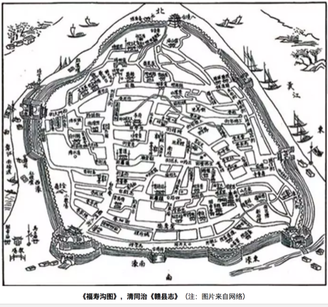

篇 3 城市生态
3.1 城市之殇
3.1.1 序言
2012年7月21日，一场61年一遇的大暴雨让北京成为“汪洋水城”，想不到有生之年居然可以在帝都这个缺水的城市同时实现了“山盟海誓”。无独有偶，不仅北京遭遇了这样的窘境与困惑，其他城市诸如南京、武汉、广州、杭州等也先后开启了“看海模式”，这种“城市之殇”已经成为近年来城市发展挥之不去的阴影。

那么，为什么我们城市的排水能力一遇到暴雨甚至中小雨就原形毕露？这就有必要来聊一聊本期的话题：“海绵体”。海绵体，顾名思义，是一种对蓄水的形容，自然界原本是一个巨大的海绵体，而如今城市的爆发式发展建设已严重破坏了自然的海绵体，损害了自然的水循环系统。传统的城市建设模式根本不具备应对超标雨水的能力，那么必然会导致“逢雨必涝”，同时还会带来水环境污染、水资源紧缺、水安全缺乏保障等问题。
2013年12月12日，习近平总书记在《中央城镇化工作会议》的讲话中强调：“提升城市排水系统时要优先考虑把有限的雨水留下来，优先考虑更多利用自然力量排水，建设自然存积、自然渗透、自然净化的海绵城市”。海绵城市顺应时代号召应“运”而生。
3.1.2 海绵城市是什么
海绵城市的理念其实在我国古代早已践行，比如故宫的排水系统、云南的“哈尼梯田”模式、赣州的“福寿沟”蓄排系统等，都算作是早前的雏形。若要刨根求底地问海绵城市是什么，海绵城市更多的是一种新型的城市发展模式。

海绵城市的初衷是让城市能够像海绵一样，在适应环境变化和应对自然灾害等方面具有良好的“弹性”。简单来说，下雨的时候，城市可以像海绵一样吸水、蓄水、渗水，防止洪涝的出现；在雨水过后，干旱的时候，又可以将蓄存的水“释放”并加以利用。但同时，我们又希望这个“海绵”能发挥更大的作用，比如说还可以净化水体，让雨水在城市存积、渗透的同时得到净化，以利于进一步的雨水资源利用和生态环境保护。这就为海绵城市的设计、建设提出了更高的要求，不单是依靠恢复或构建自然途径来蓄水、存水，还应当结合人工措施来辅以完成水资源的净化、利用和排放。

因此海绵城市的具体建设既不能“窄”，也不能“宽”。太窄就会回到植树造林搞绿化的老路子上去；太宽就会变成“海绵城市一个框，啥都可以往里装”。其实海绵城市建设还是要以目标与问题为导向，运用“源头、中途、末端”的措施，使绿色设施与灰色措施相结合，才能实现真正的目标。
简明地讲，源头主要以低影响开发设施（LID）为主，包括植草沟、雨水花园、生物滞留设施等，中途主要包括：雨水廊道、管网、沟渠等，末端主要包括：湿地、调蓄塘、调蓄池、水系等。

3.1.3 海绵城市试点
海绵城市的建设借助国家重视生态环境的东风，目前共执行了2个批次、30个城市的试点，试点期3年。期内国家将给予直辖市每年6亿专项补助，省会城市每年5亿，其他城市每年4亿元。


目前来看，海绵城市建设还没有一个全国性的“统一标准”，主要是因为我国地域差异大，东西南北中，面临的问题与挑战各不相同。比如北方地区多为缺水的寒带地区，南方地区则更容易发生内涝，西部地区多属于湿陷性黄土地区，也极度缺水。因此不同区域的海绵城市建设也应因地制宜。
3.1.4 浅谈海绵感悟
笔者从2015年开始从事海绵城市建设方面的工作，先后参与了多地的海绵城市试点建设的咨询、设计等工作，主要涉及海绵城市建设系统方案编制等方面。这里跟大家分享一下三年多来笔者对海绵城市建设的一些想法与感悟，希望能对现在或将来参与到海绵城市建设中的同仁们有所帮助。
3.1.4.1 从管理部门的角度
如果您是一位相关部门的负责人，笔者虽人微言轻，但也愿意提供一些思考供您参考。 海绵城市的建设是一个很复杂、庞大、时间跨度也大的系统工程。而且里面涉及到很多学科和部门，简单数数就需要规划、市政、园林、水利、道路等专业；住建、水利、园林、环保等部门来互相配合。因此如何统筹规划，通力协作，避免形成各自为政、“九龙治水”的局面，是一门很深的学问。
同时，很多城市现在都有新、老城区，新城区建设制约少、阻力小，一旦方案设计得当，大可一马平川。但是老城区就不一样了，不仅居民多、遗留矛盾和问题多多，牵一发而动全身，搞不好容易激化矛盾。这个时候，就不能只顾海绵城市建设的目标，还要考虑经济承受能力、轻重缓急、资金利用效率、建设时序、社会影响等方面。 千万、千万不能不分轻重地全面开工建设和盲目翻挖。最好可以以解决城市内涝、雨水利用、黑臭治理为突破口，结合棚户区和城乡危房改造、老旧小区有机更新等工作同步推进。
3.1.4.2 从项目公司负责人的角度
当前海绵城市的建设基本上都以项目打包的形式交由PPP公司全权负责建设。如果您是一位项目公司的负责人，首先恭喜您拿下了海绵城市的项目，但是接着愁人的事情来了。在很多项目管理过程中，一些PPP公司“当家不做主”，没有自主权，项目的管控不是由PPP公司独立操作，而会受到相关部门的干预，导致指挥不合理的局面。因此，如果您能在项目开展前和相关部门做好充分的沟通，对您后续工作的开展会有很大帮助。 同时，虽然目前海绵城市都处在建设之中，但是即使这样，试点期也已经过了2-3年，后期的运营维护也该做一些考虑了。如果您公司还没有做这方面的准备，那可千万要小心了，现在环境追责可是很严重的哦。
3.1.4.3 从设计师的角度
如果您是一名规划师或者设计师，请一定要“迈开腿，管好嘴”。一定要多去现场，没有调查就没有发言权，不能板凳一坐就站不起身，嘴皮一碰就出方案。曾经有一位设计院的设计师理直气壮地反驳说没必要去现场看这么细，走了个过场回来，后来设计的时候全部依靠业主来提供信息作为依据。结果可想而知，做出来的设计方案根本经不起推敲，漏洞百出，更别说拿去指导施工建设。

同时也提醒大家，海绵城市建设不只是“搞种植、搞绿化”。“花花草草”固然重要，但我们也不能天天搞“拈花惹草”的老一套。海绵城市的实质应该是绿色设施（雨水花园，植草沟，下凹式绿地等）与灰色设施（管网，泵站，调蓄池等）相结合，让它们在不同时间与空间上起到相应的功能与作用。
3.1.5 结语
海绵城市的概念一经提出，就在全国迅速地铺展开来。国内新事物的出现，不像国外“自下而上”的推进模式，而是“自上而下”的运动式推动。然而，没有前期多年的研究数据作为支撑，直接开展工程实践难免会面临各种各样的困境。 目前，“海绵城市”的提法基本已家喻户晓，无人不谈“海绵”；然而能真正潜下心来认真对海绵城市进行系统的研究与梳理的人却少之又少。一个新的领域，往往需要十年甚至更长的时间来形成系统性的理论与技术体系，之后才有可能更高效、更全面指导工程实践。希望各位海绵同仁，我们一起潜心努力，为这个领域尽自己的绵薄之力。
作者：王宇 校稿：广播站王站长 编辑：栟 手绘美图：丫头晚安